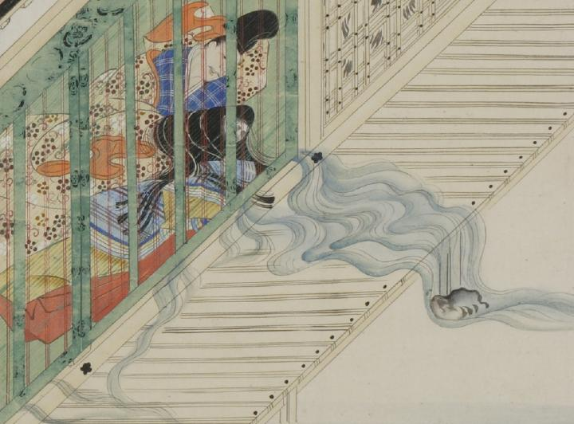

溶けて水になる女。長い髪を垂らし、女房装束をまとっている。目と鼻は影のようにぼんやりと描かれている。うつむけになり、身体から数筋に分かれて水が流れ出ている。水は簾を越えて縁側、庭に大量に流れ出ている。女と同じ上掛けに寝ている長谷雄が、左側に寄り添っている。
著作者：福田太華写／出典：親書誌：U426_nichibunken_0061：長谷雄草紙；ハセオソウシ／日付：2006／資源識別子：U426_nichibunken_0061_0002_0000
Copyright (c)2010- International Research Center for Japanese Studies, Kyoto, Japan. All rights reserved.